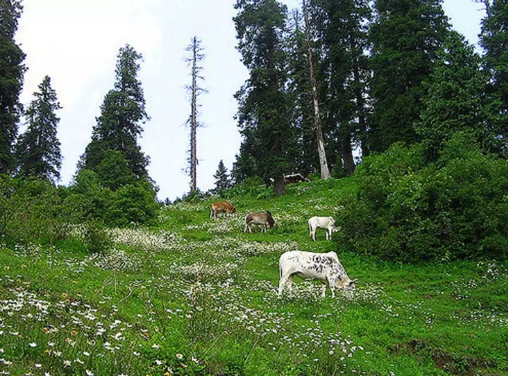
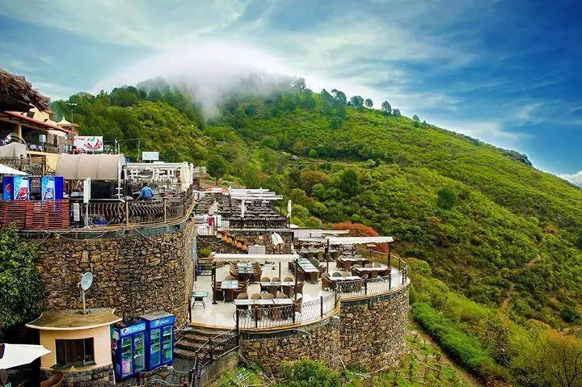

Mushkpuri is a mountain with a height of 2,800 meters above sea level and is located in the Nathia Gali Hills, District Abbottabad, Pakistan. After the Miranjani peak, it is the second-highest peak in the Galyat Region. The trek to Mushkpuri trek is safe and one can reach easily to the top. The trek starts near the Pines Hotel in Nathia Gali. The path leading to Mushkpuri is surrounded by a beautiful green pine forest that displays the beauty of nature.

Mushkpuri is a good place for people who love hiking. They will hike on a colorful path covered with greenery and give a sense of freshness to the travelers. After reaching Mushkpuri Top, tourists can enjoy the beautiful scenic views and green meadows. Travelers can capture the lovely moments in their cameras and rejoice with their special ones. The adventure lovers can enjoy camping at night. From Mushkpuri top, you will get to see the Jhelum River, Circle Bakote, and Bagh District of Azad Kashmir. In winters, the Mushkpuri Peak is covered with snow and provides a beautiful view to its visitors.